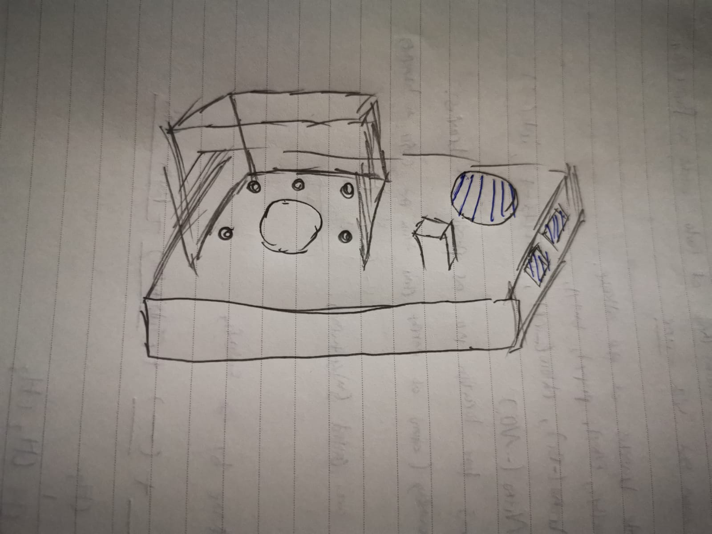
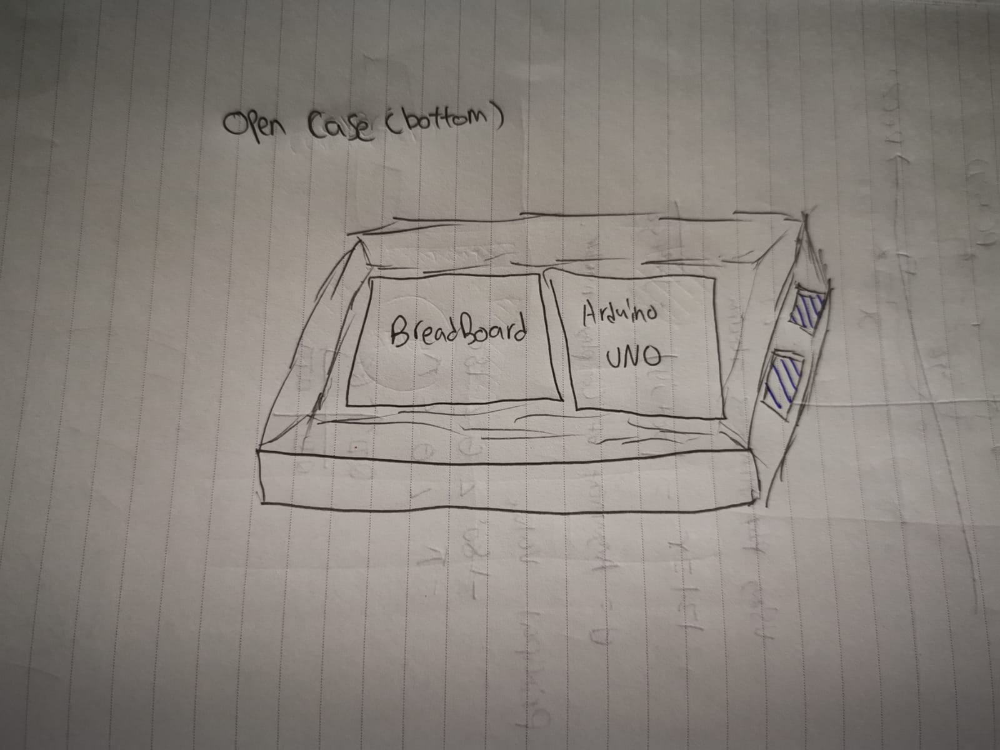
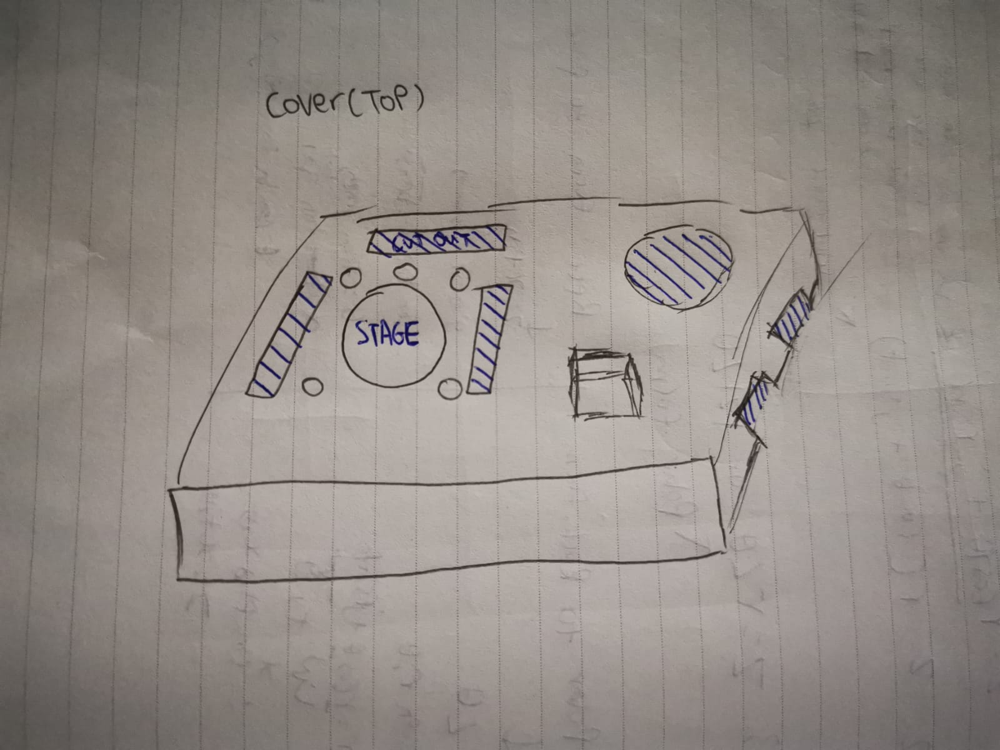
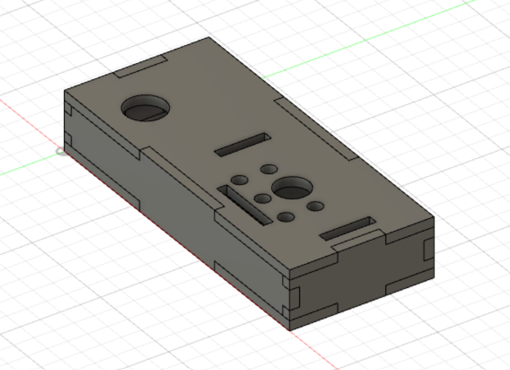
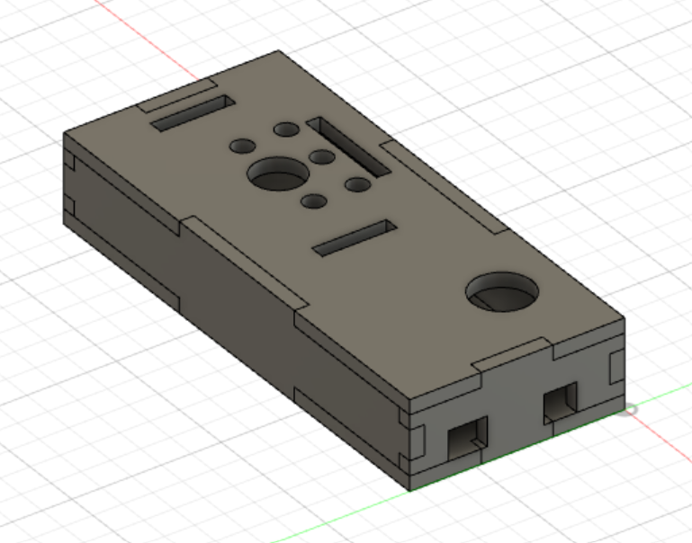
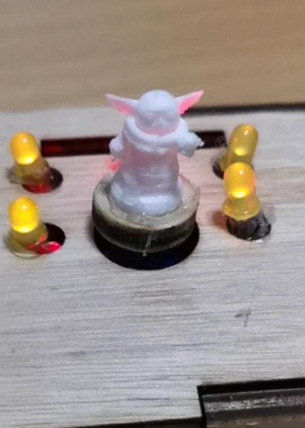
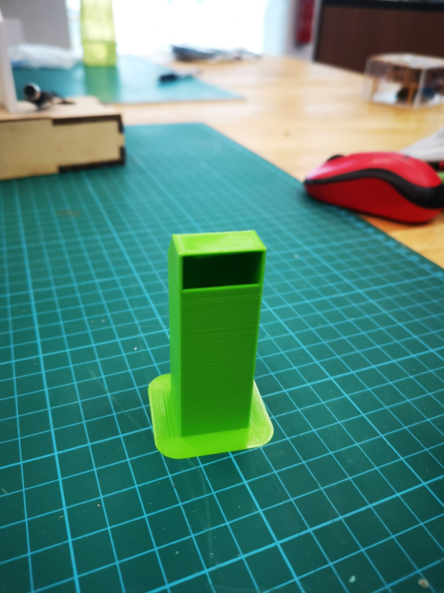
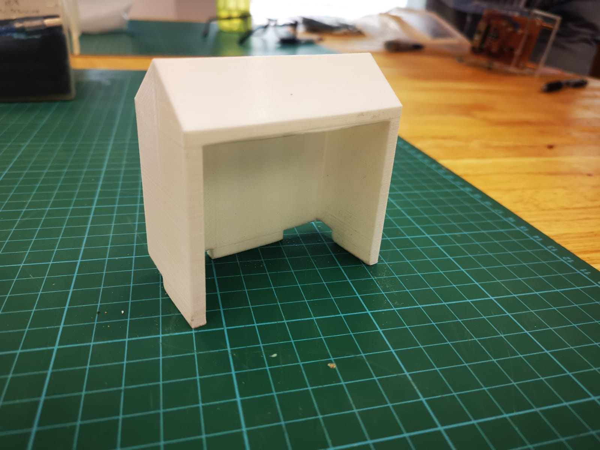
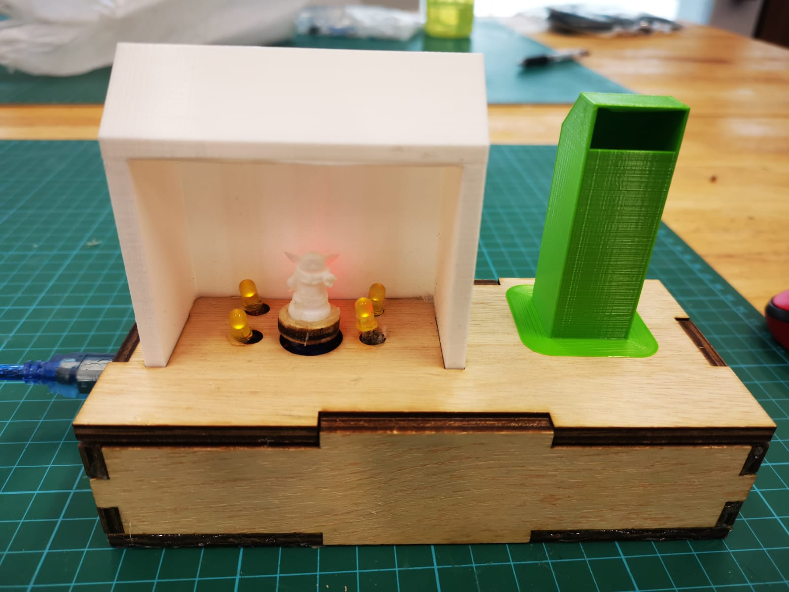

Module Project
Brief idea of what my project is about
With the skills that i have learnt from embedded programming, 3d printing, lazer cutting etc. I plan on making a design which is something that i can be put in my house for decoration purposes, i want my project to be a meaningful one, something that will remind me of what i've learnt from this module for the past semester in Year 2.
Materials needed:
- Arduino uno x 1
- Mini breadboard x 1
- Sound sensor module x 1
- Servo Motor x 1
- LED Lightbulbs (Red, Yellow, Green, White) x 5
- male to male jumper wires
- male to female jumper wires x 10
Sketch of design
  For now, since i'm still at the planning stage. My idea would be to make a design where the servo motor would be used as a platform indicated as 'stage' in my sketch where i will attach a circular piece of PLA which is attached to a design that will rotate about the stage. The smaller circles surrounding the stage will be a cut out for the placement of the LED lightbulbs. This design is made in a sheltered background so that the when the light flicker in responds to sound vibrations detected from the sound sensor module, the light will be effectively displayed, shining the colours of the different lights onto the Design as it rotates about the stage.
My plans on how i'm going to proceed on with the project:
- Design the casing on fusion 360 for lazer cutting
- Code the arduino to control the LED lightbulbs and servo motor
- 3D print the pieces needed to build the shelter and more
Here is my finalised sketch made on fusion 360, there were some slight differences from the sketch that i drew as i made some adjustments to my design as i go along the way. The concept is still the same but instead of having a top and bottom casing, i made one such that the individual pieces can be attached together at the slots.
 With the help of the TSO, i transferred my sketch in dxf file type to the computer programming the lazer cutting machine and start to laser cut my 6 pieces of sketch designed for the casing. The machine had to cut twice for the pieces to be fully cut out from the board. The board material that i used is a large piece of 5mm ply wood.

(Picture shows the complete casing after all the sides are slotted in and glued together.)
Here is the finalised coding that i made with the help and guidance of my peers and lecturers which program for both the servo motor and the LED lightbulbs. It works when the sound sensor module detects certain loudness of sound, the LED lightbulbs will light up while the servo motor will rotate back and forth simultanously.
.png)
.png)
There are three designs that i will be 3d printing:
- Baby yoda figurine
- Shelter for the stage
- A cover for the sound sensor module
For the baby yoda figurine, i got the design from a website called thingverse, here is the link to the page if you are interested in the design @
https://www.thingiverse.com/thing:4038181 .
The shelter and cover designed on the fusion 360 was based on the dimensions i've made to fit the casing.
Here are the 3d printed objects
  Final product - Interactive Baby Yoda display
At this stage, i'm done with laser cutting/3d printing/programming the code. All that's left is to assemble the various parts and components together to complete my project.
Here is a video showing how it works
I noticed that the sound sensor might be a little bit too sensitive to background noise at times, in addition to the sound sensor cover that i made, i will be surrounding cotton material around the sensor to muffle and prevent too much external noises from triggering the system.
Conclusion of my final project
In conclusion, as i mentioned before at the start of the project, i wanted to make something unique and meaninful that reminds me of what i've learnt in this module. Though there are still many things that can still be improved, however, i'm satisfied with the outcome as it shows most of the applications that i managed to learn in this module(lazer cutting, 3d printing, designing etc).
This design is a interactive design which allows you to sort of make an interaction with the figurine, as shown in the video, the figurine turns around and the background lights up when the snapping sound is detected. It was pretty interesting and fun to watch and play with.
Link to presentation slide (1920 x 1080) @ https://drive.google.com/file/d/1cNAEHod9TvLLG9k7oT5Q_LPkg2M07nm1/view?usp=sharing
Link to my video @ https://drive.google.com/file/d/1MVKzVVmNragWwE_Nz2zaSpxIvjwg6GhD/view